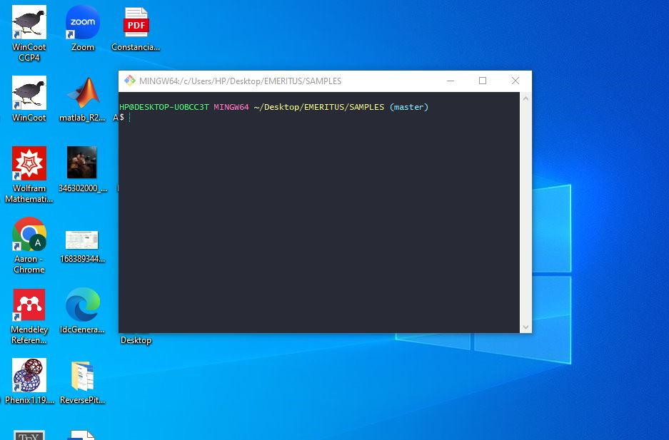
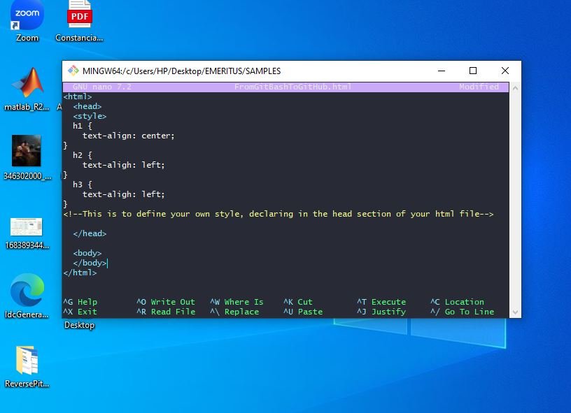
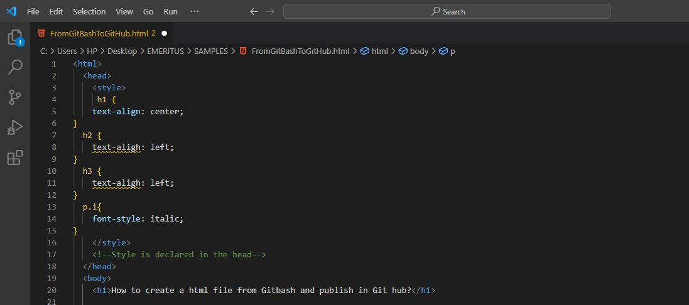

This tutorial was written by a very first beginner and attempts to address an audience of the same level. My goal is to walk through from the Git Bash and publish in GitHub . Letś start by open a new GitBash terminal

1. In the above image we start by setting our working directory, type
pwd
this tells you your working directory, if you are ok with your path leave it, but you can create another special directory withmkdir
follow by the name of your new directory.2. Now you can start by creating a new file using
touch
follow by the name of your file as FILENAME.html3. The real fun now begins with the editor, in my case I will use nano by typing
nano
followed by the FILENAME.htmlYour terminal should look like this:

4. Now you should be able to start your very first webpage, I suggest to review very nice tutorials from W3C schools to learn a bit the structure in html.
5. At this point you can continue in the nano editor or you can switch to VS code. My suggestion is that you should start in the nano, but as you progress you should switch to VS Studio. But at the beginning, you should start in nano to feel more comfortable to write the code by yourself and then switch to VS studio for advance and more complicated code

1. Now you should have in your working directory your html file and you use image files, they should be in the same directory.
2. At this point, you should still have open you GitBash Terminal and your VS studio and also your profile in GitHub.
3. If you still don´t have a profile in GitHub, I encorage you to create one.
4. Type
git init
This starts the github to add your file, make sure you are in the working directory where you have saved your files5. Type
git add
Followed by the FILENAME.html, I suggest to give a proper short name, but if you are like me who loves quite descriptive file names, I suggest to type the first three letters and the TAB key to complete faster6. Type
git commit -m
followed by your "comments of your changes between quotation marks"You should receive a message that like there are not more tracked changes